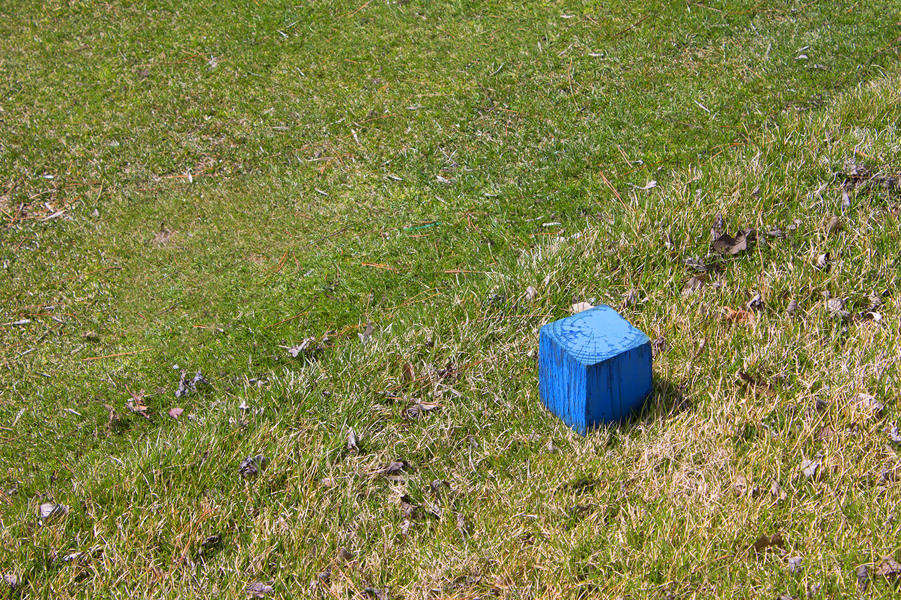

Photography Final: Spring 2018
1 / 11
Photo 1
2 / 11
Photo 2
3 / 11
Photo 3
4 / 11
Photo 4
5 / 11
Photo 5
6 / 11
Photo 6
7 / 11
Photo 7
8 / 11
Photo 8
9 / 11

Photo 9
10 / 11

Photo 10
11 / 11
Photo 11
About
Medium: Photography
Genre: Sports/Documentry
Description
This project was a final for my photography class where we were tasked to make a set of photos all pertaining to a theme or photography style. I chose to to a sports like theme of where usualy sports photographers take pictures of the players but here I didn't. Instead I took pictures of the scenery around a golf course in Colfax, Iowa while my dad played a round. My style that ened up emering from this was that I always used the rule of thirds no matter what I took. I like the ugliness to the photos because it just goes to show how real places look not perfected ones.